|
Zhipeng Zhang 张志鹏 Dr. Zhipeng Zhang is currently a Tenure-Track Assistant Professor in the School of Artificial Intelligence at Shanghai Jiao Tong University since April 2025. Prior to joining SJTU, he served as a Senior Researcher at KargBot from July 2022 to March 2025, leading key AI projects in autonomous driving. I earned my Ph.D. from the National Laboratory of Pattern Recognition (NLPR) at the Chinese Academy of Sciences (CASIA) in 2022 under the supervision of Prof. Weiming Hu. During my doctoral studies, I completed a research internship at MSRA working closely with Dr. Houwen Peng, focusing on advanced computer vision and deep learning. Upon graduation, I was awarded the "Huawei Genius Young Talent". My recent research interests include: (1) Multimodal Perception & Video Understanding; (2) Autonomous Driving (BEV, E2E); (3) Vision-Language-Action (VLA) in Embodied AI; (4) 3D Scene Reconstruction; (5) Generative AI; CV / Email / Google Scholar |
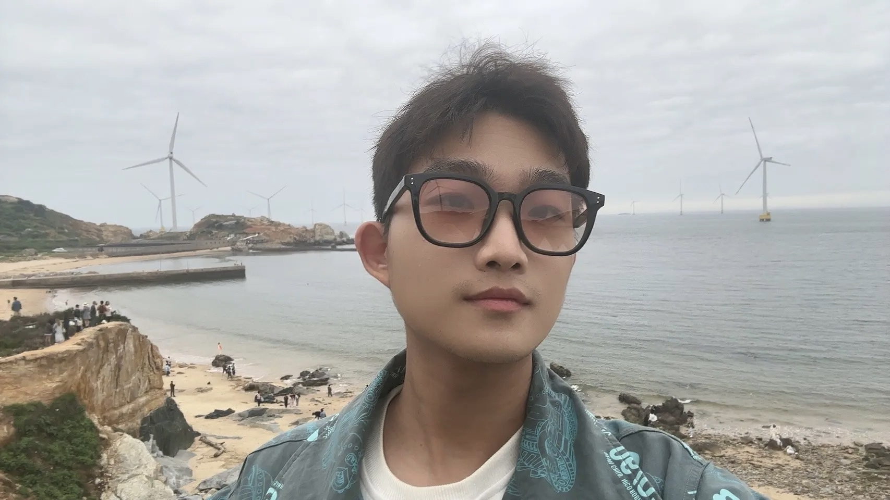 |
{kind=link}
HiringWe are recruiting research assistants. If you are passionate about AI and eager to contribute to cutting-edge research, don’t hesitate to contact me (see email above). Although I just joined SJTU this year, one of my Ph.D. whom I mentored for four years recently also obtained Huawei’s Genius Young Talent Program (华为天才少年). I am committed to supporting exceptional individuals like you and helping you achieve your academic and professional goals. 长期招聘远程科研实习生，需有一定AI基础。如果没基础也可以先咨询我学哪些内容，等入门后再开始。2026Fall入学的博士和硕士名额已经用完，无需再发邮件套瓷。请有兴趣申请2027入学的博士或者硕士（主要是现大二的同学）提前联系做科研实习生，后序名额只在RA中选择。 |
News
|

|
CorrBEV: Multi-View 3D Object Detection by Correlation Learning with Multi-modal Prototypes
Ziteng Xue, Mingzhe Guo, Heng Fan, Shihui Zhang, Zhipeng Zhang✉
CVPR, 2025
CorrBEV improves BEV detection methods in autonomous driving by introducing vision-language multimodal prototypes. |
|
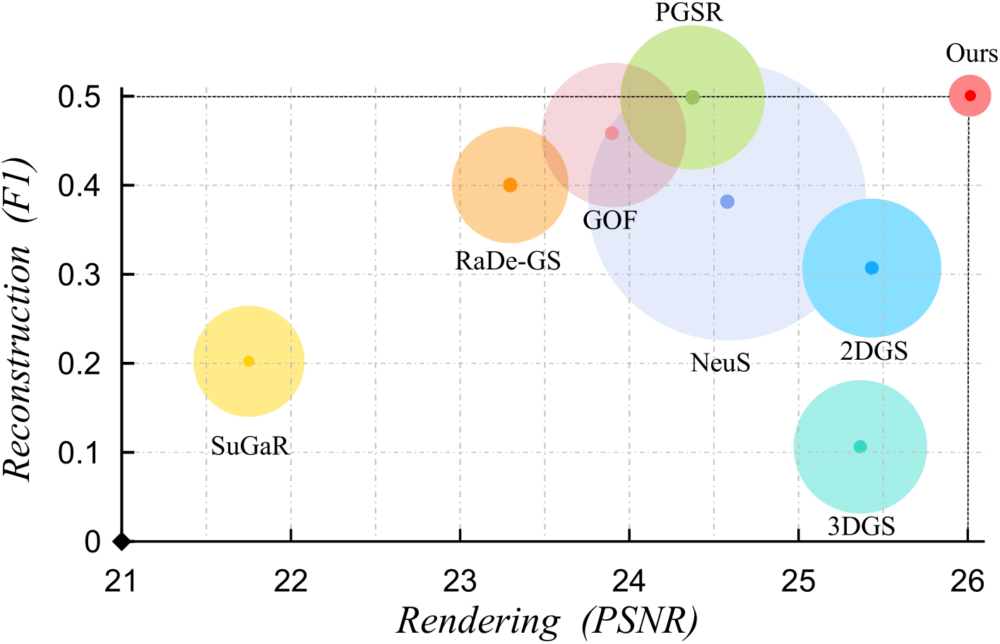
|
Evolving High-Quality Rendering and Reconstruction in a Unified Framework with Contribution-Adaptive Regularization
You Shen, Zhipeng Zhang*, Xinyang Li, Yansong Qu, Yu Lin, Shengchuan Zhang, Liujuan Cao
CVPR, 2025
CarGS simultaneously achieves promising performances in both scene reconstruction and novel view synthesis with a unified model, improving the quality of 3DGS. |
|
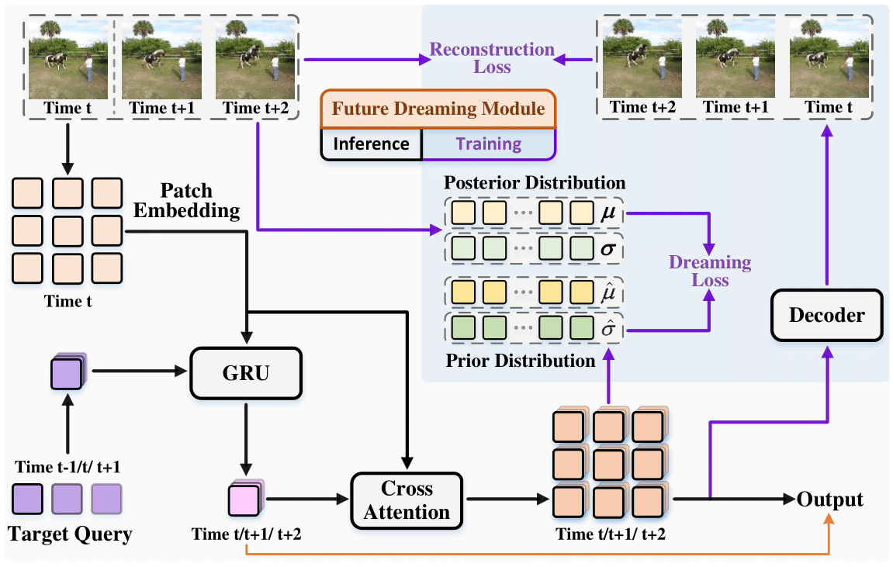
|
DreamTrack: Dreaming the Future for Multimodal Visual Object Tracking
Mingzhe Guo, Weiping Tan, Wenyu Ran, Liping Jing, Zhipeng Zhang✉
CVPR, 2025
DreamTrack shows the best performances in visual tracking by dreaming the future presentation with latent world model. |
|
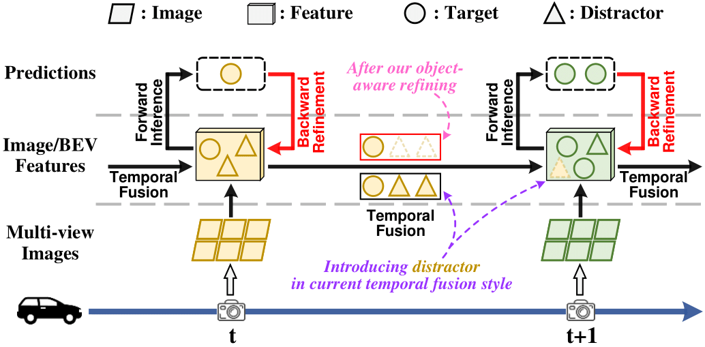
|
Cyclic Refiner: Object-Aware Temporal Representation Learning for Multi-View 3D Detection and Tracking
Mingzhe Guo, Zhipeng Zhang*✉, Liping Jing, Yuan He, Ke Wang, Heng Fan
IJCV
Cycer reduces false positives in BEV detection of autonomous driving by propagating results of t - 1 frame to t, which generates a mask to filter distractors in BEV representation. |
|
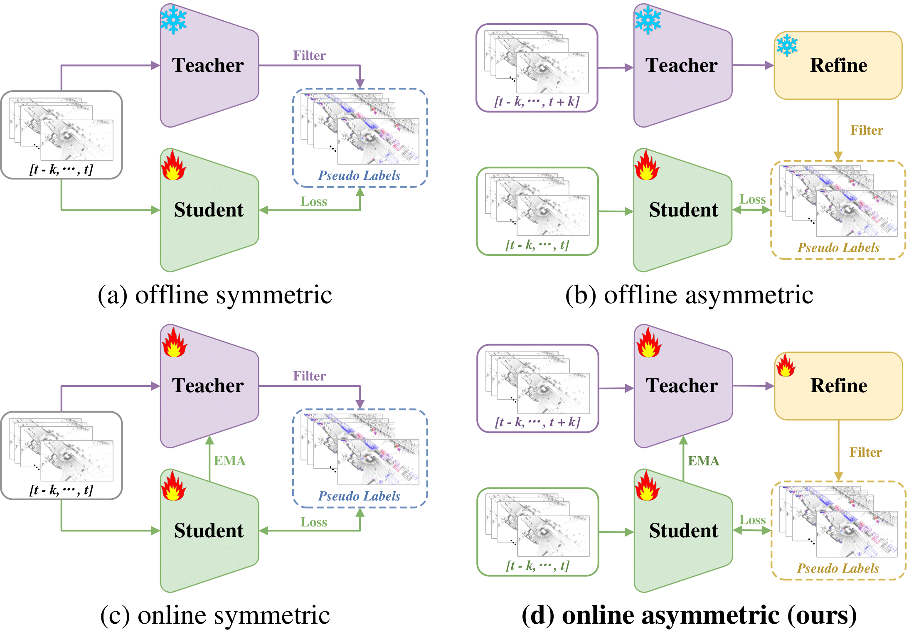
|
A-Teacher: Asymmetric Network for 3D Semi-Supervised Object Detection
Hanshi Wang, Zhipeng Zhang✉, Jin Gao, Weiming Hu
CVPR, 2023
A-Teachers proposes the first online asymmetric framework for semi-supervised 3D LiDAR detection. |
|
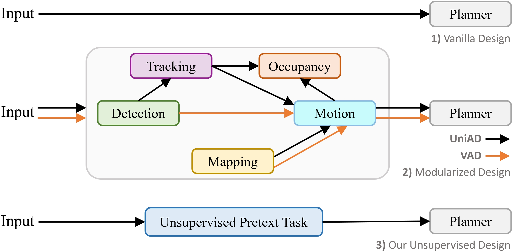
|
End-to-End Autonomous Driving without Costly Modularization and 3D Manual Annotation
Mingzhe Guo, Zhipeng Zhang✉, Yuan He, Ke Wang, Liping Jing, Haibin Ling
Arxiv
UAD proposes the first work demonstrating that an unsupervised model can outperform supervised End-to- End autonomous driving method. |
|
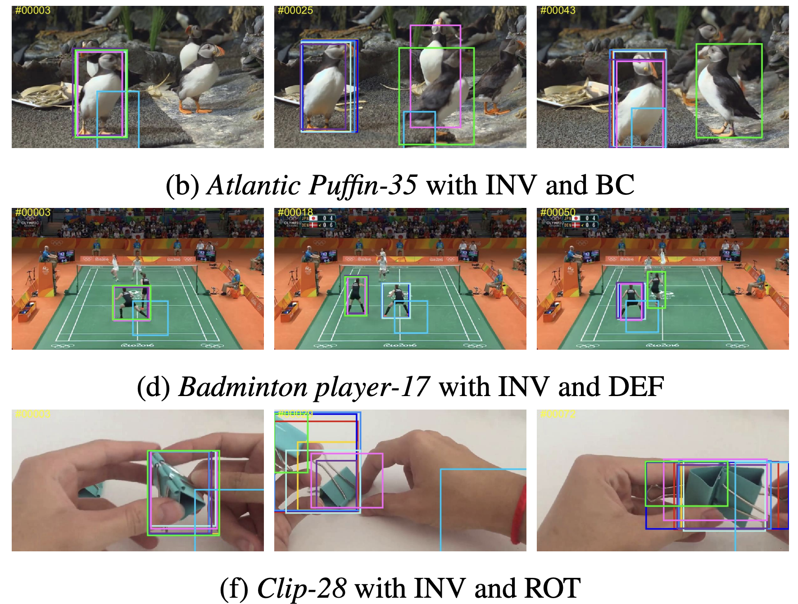
|
VastTrack: Vast Category Visual Object Tracking
Liang Peng, Junyuan Gao, Xinran Liu, Weihong Li, Shaohua Dong, Zhipeng Zhang, Heng Fan, Libo Zhang
NeurIPS, 2024
VAST is the largest visual tracking benchmark to date. |
|
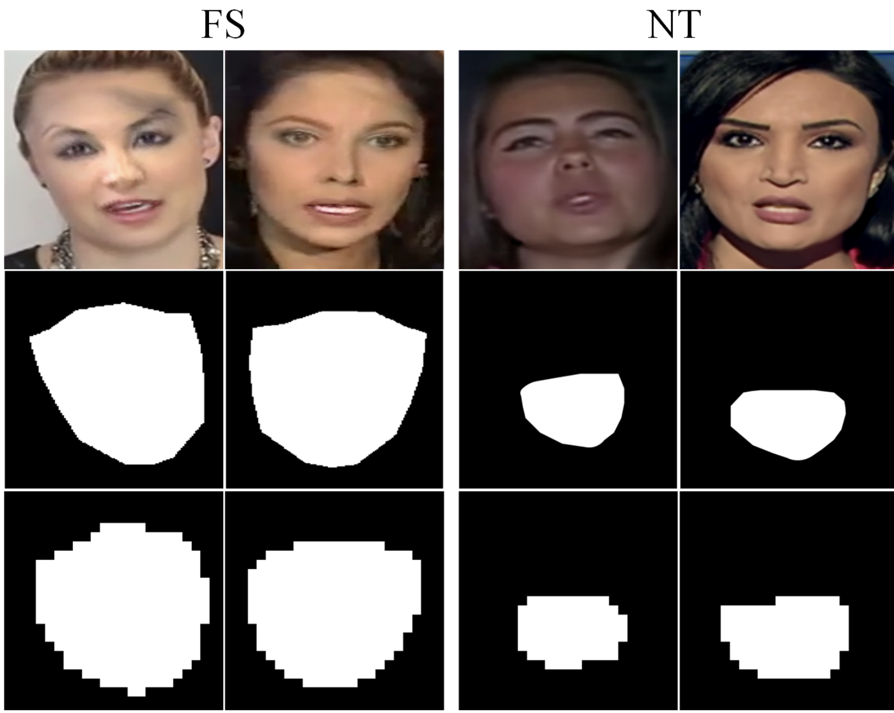
|
AUNet: Learning Relations Between Action Units for Face Forgery Detection
Weiming Bai, Yufan Liu*, Zhipeng Zhang*, Bing Li, Weiming Hu
CVPR, 2023
AUNet proposes the Action-Units Relation Learning framework to improve the generality of forgery (deepfake) detection. |
|
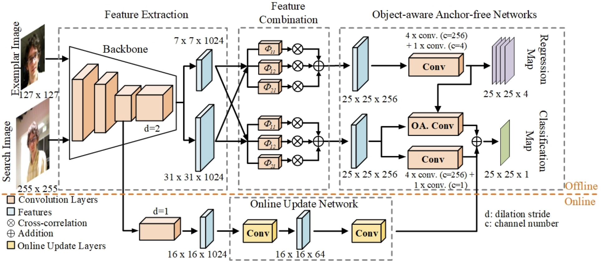
|
Ocean: Object-aware Anchor-free Tracking
Zhipeng Zhang, Houwen Peng, Jianlong Fu, Bing Li, Weiming Hu
ECCV, 2020 (Cite 900+)
Ocean explores an efficient anchor-free framework to improve object tracking robustness. |
|
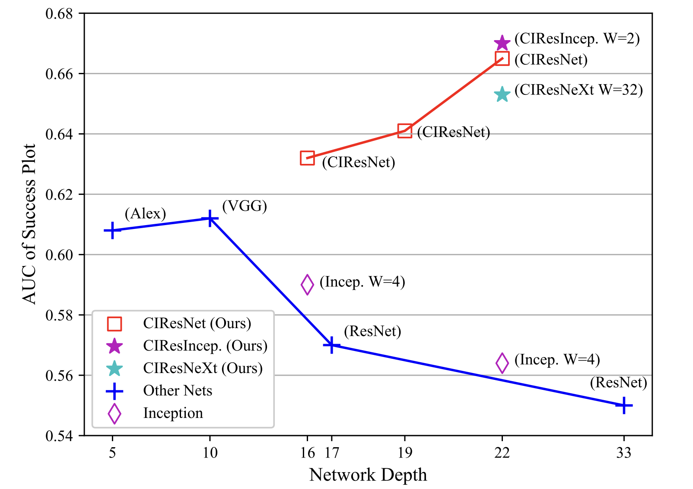
|
Deeper and Wider Siamese Networks for Real-Time Visual Tracking
Zhipeng Zhang, Houwen Peng
CVPR, 2019 (Oral, Cite 1200+)
SiamDW is the first work to solve the performance degradation in the Siamese tracking framework when using a deeper network. |
Working Experience |
|
AI School of Shanghai Jiaotong University
Assistant Professor, 2025.04 |
|
|
KargoBot
Senior Researcher, 2022.07 ~ 2025.03 |
|

|
Microsoft Research Asia (MSRA)
Research Intern, 2019.08 ~ 2020.06 |
| 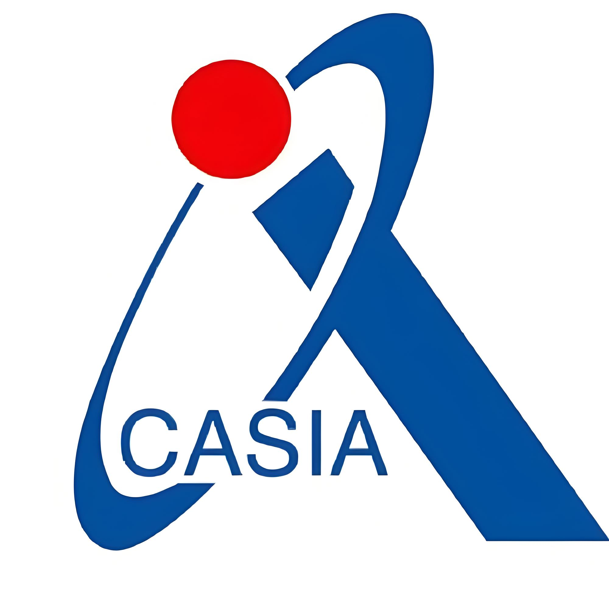 |
NLPR, Institute of Automation, Chinese Academy of Sciences (CASIA)
Ph.D.(直博), 2017.09 ~ 2022.07 |
Miscellanea |